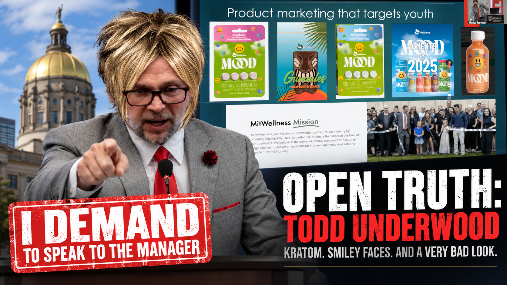
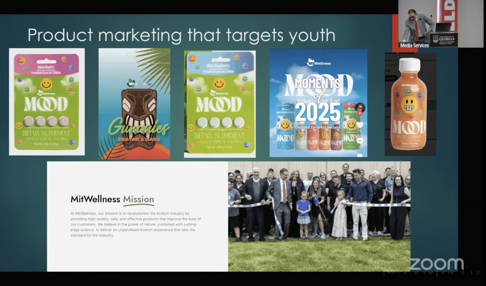

Todd Underwood came to the Georgia Capitol to "set the record straight."
By the end, he had corrected the committee, a former DEA agent, the FDA discussion, the word "dosage" — and appeared ready to correct an anesthesiologist about pharmacology.
The committee displayed a slide titled:

Bright colors. Gummies. MOOD products.
And everywhere.
Todd objected. So the chairman asked the simple question: Was he marketing to young people? Yes or no?
Todd's response began with a wager:
Because adults use smiley faces too.
Fair point. Let's test the theory.
Eventually Todd answered:
Complaint resolved?
Of course not.
Later Todd asked the chairman to remove the youth-marketing language because:
The chairman:
Todd had clarified his position. The committee had not agreed that Todd's answer settled the question.
This would become a theme.
Todd next corrected the committee's terminology.
Why?
Serving. Not dose.
Please update the paperwork accordingly.
Todd explained that he primarily manufactures what he calls "natural extract products."
His company extracts active alkaloids and formulates them into finished products with precise servings.
Later he explained why extracts are preferable to leaf. Do you keep white willow bark in your medicine cabinet?
No?
An interesting analogy immediately after the DON'T MAKE THIS SOUND MEDICAL portion of the hearing.
Todd said his company takes the plant's active components, purifies them and proportionally formulates them so consumers get "consistent, reliable results."
Then:
Representative Michelle Au — a physician and anesthesiologist — asked the question sitting underneath Todd's argument.
If his company extracts, purifies and standardizes kratom alkaloids, how is that different from isolating, concentrating and purifying 7-hydroxymitragynine?
Todd explained metabolism. Au pressed the actual question:
Todd:
Unfortunately for Todd:
Todd then explained his distinction: mitragynine must undergo metabolism to produce 7-OH, while consuming concentrated 7-OH introduces it directly.
Au listened.
That could have been the end.
Todd had other plans.
Todd:
The chairman tried to move on.
Todd:
And then the chairman delivered the sentence Todd's testimony had been begging for:
Todd:
The chairman:
Tie. Watch. Pin. Water bottle. Phone.
Fine, Todd.
You win the emoji argument. Adults can like smiley faces.
Todd came to Georgia to "set the record straight."
He wanted the committee's slide taken down. He wanted people to stop saying "dosage." He wanted everyone to understand his extracts.
And after Rep. Au asked her question, Todd wanted her to answer him.
And that may be the simplest summary of Todd's trip to Georgia.